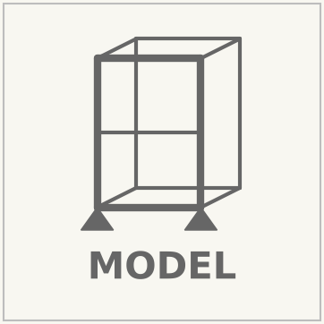
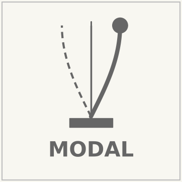
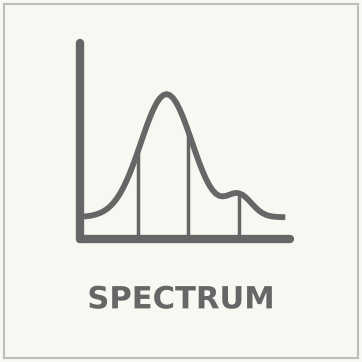
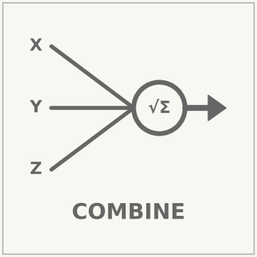
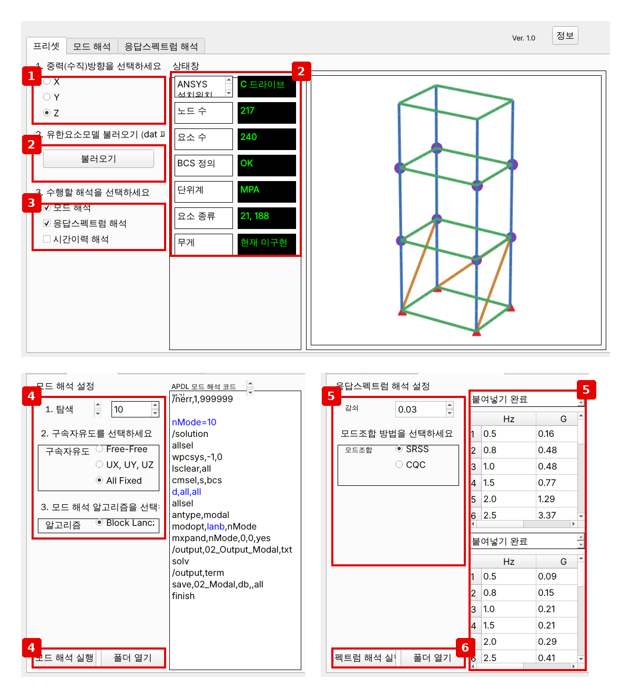

01

자세히 보기우선, .dat 파일의 NBLOCK, EBLOCK에서 Node와 Element 수를 셉니다.
BCS Component, 단위계, Element 종류는 상태 창에 표시합니다.
ANSYS를 호출하기 전에 파일 안의 해석 부분은 지웁니다.
02

자세히 보기모드 수, BCS 구속 조건, Block Lanczos Solver로 Modal 해석 APDL을 작성합니다.
해석이 끝나면 고유진동수와 Mode Shape를 보여주고, 출력에서 방향별 지배 모드와 Effective Mass를 읽어옵니다.
03

자세히 보기Excel에서 붙여넣은 RRS와 Damping 값으로 freq, sv 명령을 작성합니다.
수직 방향은 V 표, 나머지 두 방향은 H 표를 적용하고, ZPA는 Missing Mass로 반영합니다.
04

자세히 보기X, Y, Z Spectrum 결과를 SRSS로 조합합니다.
방향별 결과와 조합 결과의 세트 번호가 화면에 표시되기 때문에, POST1에서 그 세트를 읽어 응력·변위를 검토하면 됩니다.
